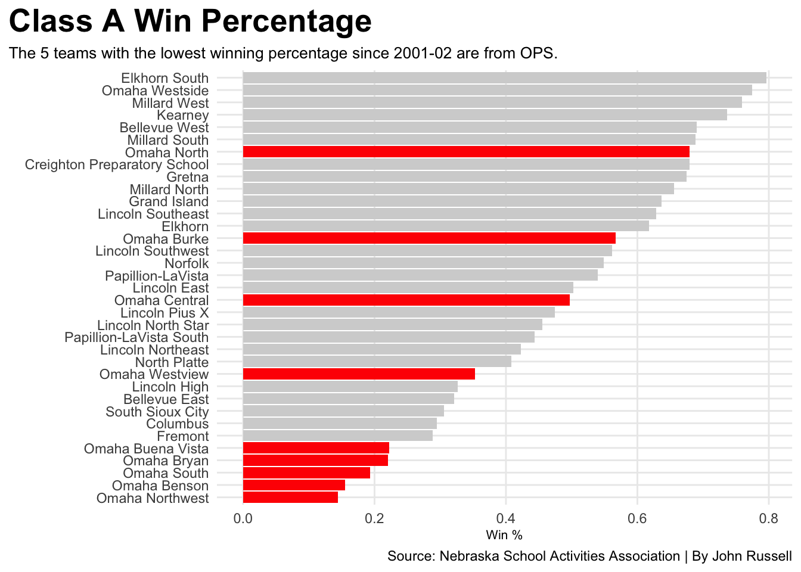
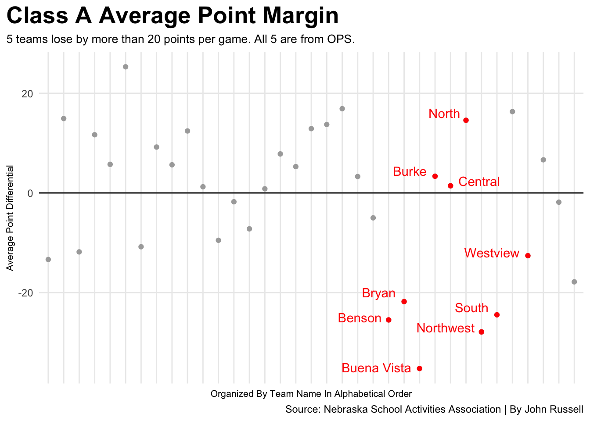

From 2010 to 2018, a team from the Omaha Public Schools district qualified for the Class A State Football Championship seven times. They won four titles in that span. Omaha North won in 2013, 2014, and 2017. Their 2014 team is regarded as one of the most-dominant football teams in Class A history. Omaha Burke won in 2018 with two-time AP All-American and Notre Dame standout Xavier Watts on the team. On the surface, OPS was enjoying a lot of success in football.
Just don’t dig any deeper than Omaha North and Omaha Burke.
Whatever you do, do NOT look at Omaha Northwest, South, Benson, or Bryan.
There are bad teams, there are really bad teams, there are awful teams, and then there are Omaha Northwest, Omaha South, Omaha Benson, and Omaha Bryan. Throw in semi-recently opened Omaha Buena Vista, and you have five football programs that are conveniently located at the bottom of this bar chart.
Code
library(tidyverse)library(ggplot2)library(ggrepel)OPS_Results <-read_csv("OPS_Results.csv")Total_Results <-read_csv("Total_Results.csv")ggplot() +geom_bar(data=Total_Results, aes(x=reorder(TEAM,Win_Pct),weight=Win_Pct), fill="lightgrey") +geom_bar(data=OPS_Results, aes(x=reorder(TEAM,Win_Pct),weight=Win_Pct), fill="red") +coord_flip() +labs(title="Class A Win Percentage", x="",y="Win %",subtitle="The 5 teams with the lowest winning percentage since 2001-02 are from OPS.", caption="Source: Nebraska School Activities Association | By John Russell" ) +theme_minimal()+theme(plot.title =element_text(size =20, face ="bold"),axis.title =element_text(size =8), plot.subtitle =element_text(size=10), panel.grid.minor =element_blank(),plot.title.position ="plot" )

Of the 34 teams who have played at least 1 season of Class A football since the 2001-02 season, the five teams with the lowest winning percentage all reside in the OPS school district. Almost all of these wins were over each other or similarly-bad teams. None of the bottom 5 teams have beaten a team that finished above .500 since September 30th, 2005, or 7,137 days.
This tells a story, but it doesn’t tell the full story. Sure, these four schools (plus Buena Vista) have lost a lot more than they have won. But, it’s not just that they lose, but how they lose. Blowouts, shutouts, forfeits, you name it.
Code
ggplot() +geom_point(data=Total_Results, aes(x=TEAM, y=Avg_PD), color="darkgrey")+geom_point(data=OPS_Results, aes(x=TEAM, y=Avg_PD), color="red")+geom_text(aes(x="Omaha Bryan", y=-20, label="Bryan "), color="red") +geom_text(aes(x="Omaha Benson", y=-25, label="Benson "), color="red") +geom_text(aes(x="Omaha Northwest", y=-27, label="Northwest "), color="red") +geom_text(aes(x="Omaha South", y=-23, label="South "), color="red") +geom_text(aes(x="Omaha Buena Vista", y=-35, label="Buena Vista "), color="red") +geom_text(aes(x="Omaha Westview", y=-12, label="Westview "), color="red") +geom_text(aes(x="Omaha Central", y=2.4, label=" Central"), color="red") +geom_text(aes(x="Omaha Burke", y=4.4, label="Burke "), color="red") +geom_text(aes(x="Omaha North", y=16, label="North "), color="red") +geom_hline(yintercept =0, color ="black") +labs(title="Class A Average Point Margin", x=" ",y="Average Point Differential",subtitle="5 teams lose by more than 20 points per game. All 5 are from OPS. ", caption="Source: Nebraska School Activities Association | By John Russell" ) +theme_minimal()+theme(plot.title =element_text(size =20, face ="bold"),axis.title =element_text(size =8),axis.text.x =element_blank(),plot.subtitle =element_text(size=10), panel.grid.minor =element_blank(),plot.title.position ="plot" )

This chart shows each Class A team’s average point differential in every game they’ve played since the 2001-02 season. Ideally, teams want to be above zero. This would mean that they are scoring more points than their opponents on average. Omaha Burke and Omaha Central accomplish this just barely. Omaha North is comfortably above that zero line.
Omaha Westview, which opened in 2022, is sitting at about -12, or an average game for them is a 12-point loss. By this metric, they are the 4th-best OPS team.
Omaha Bryan, South, Benson, Northwest, and Buena Vista all sit below -21, or a 3-touchdown loss on average. Northwest sits at a 4-touchdown loss, and Buena Vista is all the way at 5. The thing about averages is that, in theory, 50% of the results are worse than whatever the average is, or in this case, teams are losing by more than 3, 4, 5 touchdowns consistently.
The teams highlighted in red are the non-OPS teams.
Code
library(gt)PDTop25<-read_csv("Top_25_PD.csv")PDTop25 |>gt() |>cols_label(Seaon ="Season",Winner ="Winner",Loser ="Loser",Score ="Score",PD ="Margin" ) |>tab_header(title ="25 Worst Blowouts in Class A Football",subtitle ="OPS Schools have been on the wrong end of 21 of the worst 25 point margins since 2001-02." ) |>tab_style(style =cell_text(color ="black", weight ="bold", align ="left"),locations =cells_title("title") ) |>tab_style(style =cell_text(color ="black", align ="left"),locations =cells_title("subtitle") ) |>tab_source_note(source_note =md("**By:** John Russell | **Source:** Nebraska School Activities Association") ) |>tab_style(locations =cells_column_labels(columns =everything()),style =list(cell_borders(sides ="bottom", weight =px(3)),cell_text(weight ="bold", size=12) ) ) |>opt_row_striping() |>opt_table_lines("none")|>tab_style(style =list(cell_fill(color ="red"),cell_text(color ="white") ),locations =cells_body(rows = (Loser =="Bellevue East"| Loser =="South Sioux City"| Loser =="Lincoln High") ))
25 Worst Blowouts in Class A Football
OPS Schools have been on the wrong end of 21 of the worst 25 point margins since 2001-02.
Season
Winner
Loser
Score
Margin
2023-24
Lincoln North Star
Omaha Benson
93-0
93
2005-06
Lincoln Southwest
Lincoln High
84-0
84
2015-16
Bellevue West
Bellevue East
82-0
82
2023-24
Omaha Central
Omaha Northwest
78-0
78
2024-25
Lincoln Northeast
Omaha Benson
77-0
77
2018-19
Bellevue West
Bellevue East
81-6
75
2023-24
Elkhorn South
Omaha Northwest
75-0
75
2021-22
Bellevue West
Omaha Northwest
72-0
72
2024-25
Omaha Burke
Omaha South
78-6
72
2019-20
Omaha Westside
Omaha Northwest
77-6
71
2017-18
Millard West
Omaha Bryan
70-0
70
2018-19
Grand Island
Omaha Bryan
77-7
70
2022-23
Elkhorn South
Omaha Northwest
84-14
70
2008-09
Millard South
Omaha South
70-0
70
2024-25
Elkhorn South
Omaha South
70-0
70
2022-23
Bennington
Omaha Westview
70-0
70
2022-23
Millard North
South Sioux City
70-0
70
2013-14
Millard West
Omaha Bryan
69-0
69
2019-20
Grand Island
Omaha Bryan
69-0
69
2024-25
Elkhorn South
Omaha Burke
69-0
69
2009-10
Omaha Burke
Omaha Northwest
69-0
69
2019-20
Elkhorn South
Omaha Northwest
76-7
69
2023-24
Omaha North
Omaha Northwest
69-0
69
2024-25
Grand Island
Omaha Northwest
69-0
69
2009-10
Millard South
Omaha Benson
75-7
68
By: John Russell | Source: Nebraska School Activities Association
Yes, 93-0. And really, it was much worse. By halftime, North Star had set a new Class A record for points in a game by a single team with 86. The game ended early in the third quarter.
Omaha Burke’s 2024-25 team appears here twice, once as a 69-0 loser to Elkhorn South, then as a 78-6 winner over Omaha South 3 weeks later. This shows just how massive the gap is between good, bad and uncompetitive.
A common debate heard in recent years was the effect that OPS’s handling of COVID-19 would impact their football programs. Many speculated that it would cause massive setbacks to each program. Many worried that OPS schools would be even worse than they were before. The question that this data aims to answer is “Did it even have an impact on results?”
The elevator is beyond the basement floor. It’s buried far, far underground. At this point, it’s not a matter of how close the elevator is to ground-level. It’s a matter of how dangerously close it is to hitting bedrock.